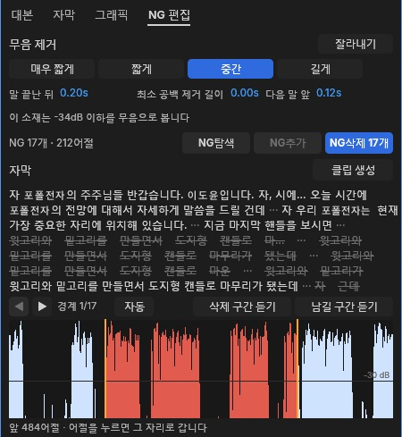

01저는 회사에서 여러 스트리머의 영상을 편집하는 편집자였습니다.
스스로 질문하는 힘
그중 NG가 잦은 스트리머의 영상은 다시 말한 구간을 자르는 데 가장 오래 걸렸습니다.
다들 당연하게 여겼지만, 저는 "이걸 자동화할 수 있지 않을까?"에서 시작했습니다.
- NG를 들여다봄다시 말하는 버릇이 스트리머마다 호흡처럼 일정했습니다
- 규칙으로 정리해 AI에게 가르침사람 감에만 있던 기준을, AI가 따를 수 있는 규칙으로
- NG 17곳 모두 찾음규칙만 있으면 가르칠 수 있다는 걸 처음 알았습니다

NG를 손으로 찾던 것을, 규칙으로
기준이 사람의 감에만 있어, 매번 처음부터 들으며 잘라 냈습니다.
신호어와 호흡 같은 패턴을 새 유형까지 정리해 가르치자, 확정한 NG 17곳을 모두 찾았습니다.
하지만 편집 프로그램에 덧붙인 도구로는 더 나아가기 어려웠습니다.